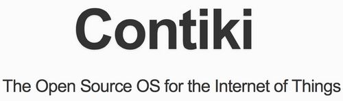

Contiki
Contiki 是一个适用于有内存的嵌入式系统的开源的、高可移植的、支持网络的多任务操作系统。包括一个 多任务核心、TCP/IP堆栈、程序集以及低能耗 的无线通讯堆栈。Contiki 采用 C语言 开发的非常小型的嵌入式操作系统，运行 只需要几K的内存。

简介
Contiki 是一个小型的，开源的，极易移植的多任务电脑操作系统。它专门设计以适用于一系列的内存受限的网络系统，包括从8位电脑到微型控制器的 嵌入系统。它的名字来自于托尔·海尔达尔的康提基号。
Contiki只需几kilobyte的代码和几百字节的内存就能提供多任务环境和内建TCP/IP支持。
特点
Contiki可以在每个进程内选择是否支持先占式多线程，进程间通讯通过事件利用消息来实现。Contiki中还包括一个可选的GUI子系统，可以提供对本地终端、基于VNC的网络化虚拟显示或者Telnet的图形化支持。 完整的Contiki系统包括以下特性：
- 多任务内核
- 每个应用程序中可选的先占式多线程
- Protothreads模型
- TCP/IP网络支持，包括IPv4和IPv6，还有 6Lowpan报文压缩、RPL路由、CoAP应用层，已经成为无线传感器网络和物联网感知层低功耗无线组网协议研发和实验的主要平台，其中 6Lowpan已经成为IETF规范，也被 zigbee SEP2.0 标准以及 ISA100.11a 标准所采纳
- Rime无线协议栈，可支持多跳组网，可以运行在IPv4上
- 视窗系统与GUI
- 基于VNC的网络化远程显示
- 简化的Web服务器
- 基于Flash的 Coffee文件系统
- 交互式Shell
- 类似 SQL 的数据库 Antelope
- 各类小型的web程序，如简单的Telnet客户端、FTP、Email等
设计编辑
Contiki适用于只有极少量内存的嵌入式系统。在一个较为典型的配置中，Contiki系统只需 2Kb的RAM与40Kb的ROM。 Contiki包括了一个事件驱动的内核，因此可以在运行时动态载入上层应用程序。Contiki中使用轻量级的protothreads进程模型，可以在事件驱动内核上提供一种线性的、类似于线程的编程风格。
平台比较
Contiki可运行于各种平台上，包括嵌入式微控制器（例如TI MSP430及Atmel AVR）以及旧的家用电脑。程序代码量只有几K，存储器的使用量也只有几十Kb。
Contiki是一个专门针对物联网或者无线传感器网络应用的操作系统和协议栈，在科研以及产业化方便得到广泛的应用。在该领域，还有一个知名的类似的系统- TinyOS，两者都实现了网络协议，两者的比较如下：
| performance | TinyOS | Contiki |
|---|---|---|
| 所属领域 | 无线传感器网络、物联网 | 无线传感器网络、物联网 |
| 软件类型 | 小型OS +无线网络协议栈 | 型OS +无线网络协议栈 |
| OS特性 | 非抢占、共享栈空间 | 非抢占、共享栈空间 |
| 协议支持 | 802.15.4、6Lowpan、RPL、CoAP | 802.15.4、6Lowpan、RPL、CoAP |
| 开发语言 | 专用NesC语言，入门较难，其它领域几乎不使用（有可能导致失业） | 通用的C语言，入门容易，在各领域广泛使用 |
| 编译器 | 专用的编译器，性能和稳定性未经过验证，目前无商用编译器支持 | 通用的C编译器，如GCC、IAR等 |
| 开发环境 | Linux、Cygwin，命令行模式，开发调试困难，门槛高 | Linux Eclipse、或者Windows IAR，IAR图形化集成开发环境，功能强大 |
| 可移植性 | 需要移植编译器，很难 | C语言很好移植 |
| 支持的硬件 | 少数几种类型的处理器 | 8位、16位、32位几乎所有的处理器类型 |
| 开发团队 | 主要由Berkeley大学开发，目前核心人员已经去CISCO，不再开发，目前TinyOS很少更新代码 | 由LWIP的作者Adam dunkels团队以及ETH大学开发，目前已经成立公司全职开发，每周都有代码更新 |
| 发展趋势 | TinyOS从一开始就主要做科研仿真，用户逐年骤减，基本上无产品 | Contiki可以做科研，也有不少产品，2014年Adam团队的目标是要将Contiki作成物联网领域的首要选择 |
移植版本
Contiki操作系统已被移植到以下系统中：
- Win32
- native
- TI CC2530
- TI CC2430
- TI MSP430
- STM32
- Atmel AVR
- Freescale MC1322x
- LPC2103 等
参考资料
- 开源嵌入式操作系统 Contiki ．开源社区网[引用日期2012-09-14]
- 物联网感知层的IPv6协议标准化动态 ．物联网开发论坛[引用日期2012-09-19]
- Coffee文件系统概述及其学习资料 ．物联网开发论坛[引用日期2012-09-19]
- 开源嵌入式操作系统Contiki 2.6 发布 ．物联网开发论坛[引用日期2012-09-19]